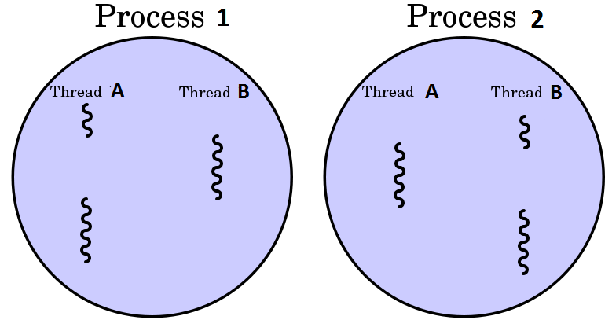

Tras aprender los conceptos básicos de la programación concurrente y ver cómo los procesos pueden colaborar para conseguir multitarea, en este tema vamos a poner la mirada dentro de un proceso.
La ejecución de un proceso comienza con un único hilo, pero se pueden crear más sobre la marcha. Los distintos hilos de un mismo proceso comparten:
Las características anteriores son las que los diferencias de los procesos. En cambio, cada hilo tiene sus propios valores para
Por lo tanto, vamos a utilizar los threads para realizar programación concurrente y/o paralela dentro de un proceso.
Aunque los hilos se ejecutan en el contexto de un procesos, cada uno tiene su TCB (Tread Control Block) que es sensiblemente más pequeños que el PCB (Process Control Block) porque entre los hilos comparten gran parte de ese PCB. Por eso veremos que a los hilos también se le llama lightweight processes (procesos ligeros) y por tanto los cambios de contexto en el procesador son mucho menos costosos para los hilos que para los procesos.
Hilos: comunicación vs sincronización
Por todo lo comentado, el intercambio de información entre hilos es sencillo, dado que los distintos hilos de un mismo proceso comparten la memoria asignada al proceso.
Sin embargo, los hilos deben coordinarse para el acceso a los contenidos de la memoria y a los ficheros, lo cual hace que esa coordinación y sincronización sea la parte complicada de uso.
De eso va este tema.
Objetivos de esta unidad:
Un hilo (thread en adelante) puede ejecutar código Java dentro de tu aplicación Java.
Cuando un programa Java se lanza (se convierte en un proceso) empieza a ejecutarse por su método main() que lo ejecuta el thread principal (main), un hilo especial creado por la Java VM para ejecutar la aplicación. Desde un proceso se pueden crear e iniciar tantos threads como necesites. Estos hilos ejecutarán partes del código de la aplicación en paralelo con el thread principal
Los thread en Java son objetos como cualquier otro. Un thread es una instancia de la clase java.lang.Thread, o instancias de clases que heredan de ésta. Como ya hemos icho, además de ser objetos, los threads tienen la capacidad de ejecutar código.
La forma más usada para indicar a un thread qué código queremos que ejecute es creando una clase que implemente la interfaz java.lang.Runnable.
Esta interfaz es una interfaz estándar que viene con la plataforma Java. La interfaz Runnable sólo tiene un único método, void run().
Sea lo que sea lo que el thread tenga que hacer, debe estar incluido en la implementación del método run. Tenemos tres posibilidades de implementar dicha interfaz:
En las siguientes secciones podemos ver cómo usar cada una de ellas.
La primera forma que vamos a ver es creando una clase que implementa la interfaz. Podemos ver un ejemplo básico en el siguiente código:
public class MyRunnable implements Runnable {
public void run() {
System.out.println("MyRunnable running");
}
}
Todo lo que hace la implementación es imprimir el texto "MyRunnable running". Tras ejecutar esa línea de código, el método run termina y el thread que estuviese ejecutándolo se pararía.
Otra forma de obtener un objeto que implemente Runnable es crear una clase anónima. A continuación tenemos un ejemplo de cómo hacerlo
Runnable myRunnable =
new Runnable() {
public void run() {
System.out.println("Runnable running");
}
}
Salvo por el hecho de usar una clase anónima, el ejemplo hace exactamente lo mismo que el anterior en el que se creaba una clase que implementaba la interfaz.
Para la tercera forma nos vamos a basar en la característica de la interfaz Runnable, esto es, que sólo tiene un único método a implementar, el método run. Aunque Runnable no es una interfaz funcional, podemos crear una expresión Lambda que no dará lugar a confusión acerca del método que se quiere ejecutar. Por este motivo podemos usar la expresión lambda como si Runnable fuese una interfaz funcional.
Vamos a verlo con un ejemplo
Runnable runnable =
() -> { System.out.println("Lambda Runnable running"); };
Vamos a fijarnos en este ejemplo
public class LiftOff implements Runnable { private int countDown = 10; private static int taskCount = 0; private final int id = taskCount; public LiftOff() {} public LiftOff(int countDown) { this.countDown = countDown; } @Override public void run() { while (countDown > 0) { System.out.println("#" + id + " (" + countDown + ")" ); countDown--; } System.out.println("Lanzamiento (" + id + ")"); } public static void main(String[] args) { LiftOff launch = new LiftOff(); launch.run(); System.out.println("Comienza la cuenta atrás!"); } }
Copia el código anterior y ejecútalo en tu IDE. ¿Qué ves en la salida?
¿Qué está pasando con la ejecución del programa anterior?
Tras ejecutarlo, ¿el mensaje "Comienza la cuenta atrás!" está puesto en el sitio correcto?
intenta crear más instancias del la clase LiftOff y haz que se ejecuten todas (dentro del main)
Si observas la salida de aplicación, ¿está haciendo algo diferente a una aplicación monohilo?
¿Qué puedes extraer de la salida del programa?
Respuesta a las cuestiones planteadas
El mensaje debería mostrarse antes que la cuenta atrás. De hecho la instrucción con el System.out está después de la llamada al método run.
Como se puede observar, no estamos haciendo nada diferente. El código de run se está ejecutando uno después de otro.
En realidad, no estamos creando nuevos threads, lo único que hemos hecho hasta ahora es implementar una interfaz, pero llamando al método run estamos haciendo que el hilo principal de la aplicación, el único hilo de momento, esté ejecutando un método run, después otro, después otro, ... y cuando ha acabado con todos hace el System.out.
Además de implementando la interfaz Runnable, la segunda forma que tenemos de indicar a un thread el código a ejecutar es creando una subclase de java.lang.Thread y sobrescribiendo el método run(). La clase Thread implementa de forma implícita la interfaz Runnable. Al igual que con Runnable, el método run() contiene el código que ejecutará un thread cuando se llame al método start().
Vamos a ver un ejemplo de creación de una clase que herede de Thread:
public class MyThread extends Thread {
public void run(){
System.out.println("MyThread running");
}
}
Para crear y lanzar un nuevo thread tenemos que usar el siguiente código
MyThread myThread = new MyThread();
myTread.start();
La llamada al método start() devuelve el control al thread principal en cuanto el hilo asociado se inicia. A diferencia del ejemplo de la cuenta atrás, cuando llamamos al método start el hilo principal no espera a que el método run() se ejecute por completo antes de seguir. El método run() se ejecutará en un hilo de ejecución diferente, dentro del mismo proceso y compitiendo por las unidades de procesamiento del sistema. Al igual que en los casos anteriores, cuando se ejecute el método run() mostrará por pantalla el mensaje "MyThread running" y el hilo terminará su ejecución (y su vida) porque finaliza el código del método run().
El ejemplo se puede repetir con una clase anónima, aunque ya no con una expresión lambda, ya que la clase Thread tiene más de un método y no es una interfaz funcional.
Thread thread = new Thread() {
public void run() {
System.out.println("Thread Running");
}
}
thread.start();
El ejemplo mostrará el mensaje "Thread running" cuando el método run() se ejecutado por el nuevo thread.
Ejemplo Cuenta atrás
Copia el ejemplo original de la "Cuenta Atrás" y haz que la clase LiftOff ahora herede de Thread.
Ahora, en vez de llamar directamente al método run, haz que los threads llamen al método start().
El mensaje "Comienza la cuenta atrás!" ¿aparece ahora en el sitio correcto? ¿Porqué sale antes si en el código está después?
Crea nuevas instancias de LiftOff y has que se lancen en el main
¿En qué ha cambiado ahora la ejecución de las aplicación respecto a una aplicación monohilo?
¿Qué puedes extraer de la salida del programa?
Respuesta a las cuestiones planteadas
Ahora el mensaje "Comienza la cuenta atrás!" sí aparece, en la salida, en la posición correcta, es decir, antes de la cuenta atrás. Si observamos el código, siguiendo una lógica secuencial, el mensaje debería aparecer después, como pasó en la primera prueba que hicimos.
La diferencia ahora es que el código del run() lo está ejecutando un hilo diferente, y desde el momento en que se hace el start() el control vuelve al hilo principal (main) que continúa ejecutando las líneas de código que hay en el método main. La creación de un hilo, aunque menos que la de un proceso, también tiene un coste de recursos y temporal, por lo que el hilo tarda unos instantes en empezar a ejecutarse. Por eso el hilo principal tiene tiempo de ejecutar la siguiente instrucción y mostrar el mensaje.
La gran diferencia ahora, que podemos observar en la salida, es que los hilos se están ejecutando concurrentemente, ya que vemos como sus salidas se intercalan.
Esa es la diferencia más obvia. Sin embargo, si ejecutamos el programa varias veces, podremos observar que no hay dos ejecuciones iguales. No depende de nosotros el orden en el que se ejecutan las instrucciones, sino que depende de la planificación que realice el SO. En este contexto nos encontramos con una ejecución aleatoria o indeterminista como la denominamos en el primer tema.
El cómo controlar ese orden es lo que trabajaremos en la segunda parte del tema.
¿Cuándo termina un proceso?
En el ejemplo anterior, la última línea del hilo principal se ejecuta antes que el código de los hilos. ¿Qué pasa entonces con el proceso?
En un proceso monohilo, estamos acostumbrados a que el proceso sigue en ejecución (vivo) mientras el código que hayamos puesto en el main esté ejecutándose. En concreto mientras el main-thread esté en ejecución.

Cuando un proceso tiene mas hilos, la norma es que el proceso no finaliza su ejecución hasta que el último de los hilos haya terminado. Así que podemos encontrarnos, como en ejemplo de la cuenta atrás, que el main-thread acaba y el proceso sigue en ejecución.
Para hacer que un thread ejecute el código del método run de una clase (instancia de clase, clase anónima, expresión lambda) que implemente la interfaz Runnable, tenemos que pasar esa instancia como parámetro en el constructor de la clase Thread. Veamos cómo se hace:
Runnable runnable = new MyRunnable(); // or an anonymous class, or lambda...
Thread thread = new Thread(runnable);
thread.start();
Cuando se inicia el thread, llamando a su método start(), se crea un nuevo thread que ejecuta el código del método run de la instancia MyRunnable. El ejemplo anterior imprimirá el texto "MyRunnable running (ver el código de MyRunnable en los ejemplos anteriores).
Info
En resumen, tenemos dos formas de indicarle a un thread qué código debe ejecutar.
En ambos casos, para que se cree el thread y ejecute el código del método run, debemos llamar al método start() del objeto Thread.
En el siguiente código tenemos dos ejemplos, uno que hereda de Thread y otro que implementa Runnable. Ambos ejemplos hacen lo mismo, pero usando diferentes formas de crear el thread.
public class EjemploThread extends Thread { public void run() { // Código del hilo } public static void main(String[] args) { EjemploThread hilo = new EjemploThread(); hilo.start(); } }
Si nos fijamos en las lineas resaltadas podemos observar las diferencias entre una y otra forma.
public class EjemploRunnable implements Runnable { public void run() { // Código del hilo } public static void main(String[] args) { Thread hilo = new Thread(new EjemploRunnable()); hilo.start(); } }
No hay nada que indique que una forma es mejor que otra. Ambos métodos son similares y el resultado es el mismo. . El método preferido debería ser implementar Runnable, y pasarle la instancia al constructor de Thread.
Unas cuantas razones en contra de usar Thread
Error común: Llamar a run () en vez de a start()
Cuando empezamos a trabajar con hilos, un error muy común es llamar directamente al método run en vez de llamar al método start():
Thread newThread = new Thread(MyRunnable());
newThread.run(); //should be start();
or
MyRunnable runnable = new MyRunnable();
runnable.run();
En principio no notamos ningún error ya que el código de run() se ejecuta y podemos ver los resultados. Sin embargo, ese código no es ejecutado por el nuevo thread que acabamos de crear. El método run() es ejecutado por el thread que ha creado el objeto, es decir, el mismo thread que ha ejecutado las líneas anteriores a la llamada a run().
Para hacer que el método run, de una instancia que implemente Runnable o de una que herede de Thread, sea ejecutado por un el nuevo thread que acabamos de crear, newThread debemos llamar al método newThread.start().
Si miramos a la definición de la clase Thread veremos que tiene muchos métodos. Debemos tener cuidado ya que algunos de estos métodos como stop(), suspend(), resume() and destroy() han sido marcados como obsoletos(deprecated).
Veamos algunos de los métodos de la clase Thread más utilizados:
| Method | Description |
|---|---|
| start() | Hace que un nuevo thread ejecute el código del método run() |
| boolean isAlive() | Comprueba si un thread está vivo o no |
| sleep(long ms) | Cambia el estado del thread a bloqueado durante los ms indicados |
| run() | Es el código que el thread ejecuta. Es llamado por el método start(). Representa el ciclo de vida de un thread. |
| String toString() | Devuelve una representación legible de un thread [nombre, priority, nombre_del_grupo |
| long getId() | Devuelve el identificador del thread (es un id asignado por el proceso) |
| void yield() | Hace que el hilo pare su ejecución instantáneamente volviendo a la cola y permitiendo que otros hilos y/o procesos se ejecuten. |
| void join() | Se llama desde otro thread y hace que el thread que lo invoca se bloquee hasta que el thread termine. Es parecido a p.waitFor() para los procesos |
| String getName() | Obtiene el nombre del thread |
| String setName(String name) | Cambia el nombre del thread |
| int getPriority() | Obtiene la prioridad del thread |
| setPriority(int p) | Modifica la prioridad del thread |
| void interrupt() | Interrumpe la ejecución del thread provocando que salte una excepción de tipo InterruptedException |
| boolean interrupted() | Comprueba si un thread ha sido interrumpido |
| Thread.currentThread() | Método estático de la clase Thread que devuelve una referencia al hilo que está ejecutando el código |
| boolean isDaemon() | Comprueba si un hilo es un servicio/demonio. Un proceso/hilo de baja prioridad que se ejecuta de forma independiente de su proceso padre. Un proceso puede finalizar aunque un hilo daemon esté todavía ejecutándose. |
| setDaemon(boolean on) | Convierte un hilo en un demonio/servicio. Por defecto todos los hilos se crean como hilos de usuario. |
| int activeCount() | Devuelve el número de hilos pertenecientes a un grupo que siguen activos. |
| Thread.State getState() | Devuelve el estado actual del hilo. Los posibles valores son NEW, RUNNABLE, BLOCKED, WAITING, TIMED_WAITING or TERMINATED. |
La clase Thread también tiene unos 9 constructores, la mayoría de ellos están duplicados permitiendo recibir un objeto Runnable como parámetro
| Constructores de la clase Thread |
|---|
| Thread() |
| Thread(Runnable target) |
| Thread(String name) |
| Thread(Runnable target, String name) |
| Thread(ThreadGroup group, Runnable target) |
| Thread(ThreadGroup group, Runnable target, String name) |
| Thread(ThreadGroup group, Runnable target, String name, long stackSize) |
| Thread(ThreadGroup group, Runnable target, String name, long stackSize, boolean inheritThreadLocals) |
Veamos un ejemplo práctico de uso de todos estos métodos
public class U3S2_ThreadMethodsExample extends Thread {
U3S2_ThreadMethodsExample (ThreadGroup group, String name) {
// Call to parent class constructor with group and thread name
super(group, name);
}
@Override
public void run() {
String threadName = Thread.currentThread().getName();
System.out.println("["+threadName+"] " + "Inside the thread");
System.out.println("["+threadName+"] " + "Priority: "
+ Thread.currentThread().getPriority());
Thread.yield();
System.out.println("["+threadName+"] " + "Id: "
+ Thread.currentThread().getId());
System.out.println("["+threadName+"] " + "ThreadGroup: "
+ Thread.currentThread().getThreadGroup().getName());
System.out.println("["+threadName+"] " + "ThreadGroup count: "
+ Thread.currentThread().getThreadGroup().activeCount());
}
public static void main(String[] args) {
// main thread
Thread.currentThread().setName("Main");
System.out.println(Thread.currentThread().getName());
System.out.println(Thread.currentThread().toString());
ThreadGroup even = new ThreadGroup("Even threads");
ThreadGroup odd = new ThreadGroup("Odd threads");
Thread localThread = null;
for (int i=0; i<10; i++) {
localThread = new U3S2_ThreadMethodsExample((i%2==0)?even:odd, "Thread"+i);
localThread.setPriority(i+1);
localThread.start();
}
try {
localThread.join(); // --> Will wait until last thread ends
// like a waitFor() for processes
} catch (InterruptedException ex) {
ex.printStackTrace();
System.err.println("The main thread was interrupted while waiting for "
+ localThread.toString() + "to finish");
}
System.out.println("Main thread ending");
}
}
En el ejemplo anterior podemos ver cómo tenemos que ayudarnos del método estático Thread.currentThread() para saber qué hilo está ejecutándose en cada momento, ya que hay muchos hilos ejecutando el mismo código al mismo tiempo.
Hemos creado una única clase para los hilos y para el hilo principal. No debería ser una práctica común más allá de los ejemplos. Es mejor separar el código del objeto que hereda de Thread o que implementa Runnable en una clase aparte.
También es importante hacer ver que la clase Thread (o Runnable) puede tener sus propios constructores, propiedades y métodos, más allá del método run que están obligadas a sobrescribir. También puede invocar a los constructores de la superclase haciendo uso de super().
:::question Dividir el código en dos clases
Copia el código de ThreadMethodsExample y divídelo en dos clases. Por un lado, una que contenga a la clase que extiende de Thread y otra que simplemente tenga el método main y el código para crear y lanzar los hilos..
Una vez dividido el código cambia U3S2_ThreadMethodsExample para que implemente la interfaz Runnable. Haz los cambios oportunos en la otra clase para que todo vuelva a funcionar como antes.
:::
Si ejecutas el programa podrás ver que aunque los threads son lanzados en orden (1, 2, 3 etc.) su ejecución ya no se realiza de forma secuencial, pudiendo ocurrir que el thread 1 no sea el primero en mostrar su nombre por la salida estándar (System.out). Esto es debido a que los threads se ejecutan en paralelo y no de forma secuencial. La JVM y/o el sistema operativo determinan el orden en el que se ejecutan. Este orden no tiene porqué ser el mismo en el que se lanzaron ni cada vez que se ejecutan.
Un thread puede pausar su propia ejecución llamando al método estático Thread.sleep(). El método sleep() recibe como parámetro el número de milisegundos que quiere estar pausado antes de volver a ponerse como listo para ejecución. No es un método preciso al 100% (menos aún si utilizamos la versión que recibe ms y ns), pero aún así es bastante preciso. A continuación tenemos un ejemplo de un thread que se pausa durante 3 segundos (3000ms) llamando al método sleep():
try {
Thread.sleep(3000L);
} catch (InterruptedException e) {
e.printStackTrace();
}
::: info Simulación de sistema reales
Este es un método que vamos a utilizar exhaustivamente en las actividades para simular períodos de tiempo y acelerar las simulaciones.
Por ejemplo, podemos hacer un ajuste para que cada hora real se reduzca a un segundo. De esta forma podremos simular un día completo en tan solo 24 segundos.
También es interesante su uso para utilizar períodos de tiempo aleatorios en la ejecución de cada hilo, permitiendo así una simulación realista de los eventos en un sistema real.
:::
En Java podemos generar números aleatorios en el rango de los enteros, long, float y double.
Tenemos tres métodos básicos para hacerlo
Podemos usar la clase java.util.Random para generar datos aleatorios, siguiendo los siguientes pasos:
Random rand = new Random()Si llamamos al método nextInt con parámetros (el límite superior), obtendremos números enteros en el rango
int randomWithNextIntWithinARange = random.nextInt(max)
Esto nos dará un número entre 0 (inclusive) y max (no incluido) [min, max[. El valor del límite debe ser mayor que 0 sino obtendremos una java.lang.IllegalArgumentException.
Para generar números aleatorios en un rango podemos usar Math.random() siguiendo los pasos detallados a continuación:
Math.random()*(max-min)+min para generar valores entre min y max, ambos inclusive [min, max].El valor devuelto por Math.random() está en el rango [0, 1]
Para generar números entre 0 y un límite superior (50)
Math.random()*50
Para generar números entre 1 y un límite superior (50)
Math.random()*49+1
Para generar números en un rango predeterminado [200, 500]
Math.random()*300+200
La clase java.util.Random no tiene buen rendimiento en entornos multihilo. De forma simplificada, el motivo es la contención, ya que muchos hilos comparten la misma instancia de Random y se tiene que secuenciar y sincronizar el acceso a sus métodos.
Para evitar esa limitación, Java introdujo la clase java.util.concurrent.ThreadLocalRandom para generar números aleatorios en entornos multihilo.
Si llamamos al método ThreadLocalRandom.current() nos devolverá la instancia de ThreadLocalRandom para el hilo actual. A partir de aquí podemos generar valores aleatorios llamando a los métodos de la clase con la instancia obtenida.
Para generar valores enteros sin límite:
int unboundedRandomValue = ThreadLocalRandom.current().nextInt());
Para generar valores enteros en un rango dato, es decir, con un límite superior e inferior [0, 100[:
int boundedRandomValue = ThreadLocalRandom.current().nextInt(0, 100);
Al igual que con Random, 0 está incluido en el rango mientra que 100 no.
También podemos generar otros tipos de datos como long y Double llamando a los métodos nextLong() y nextDouble() de forma similar a los ejemplos anteriores.
La clase ThreadLocalRandom hereda de Random, por lo que comparten muchos métodos y funcionalidad.
Los hilos heredan la prioridad del padre en Java, pero este valor puede ser cambiado con el método setPriority() y con getPriority() podemos saber la prioridad de un hilo.
El valor de la prioridad varía entre 1 y 10. Cuanto más alto es el valor, mayor es la prioridad. La clase Thread define las siguientes constantes MIN_PRIORITY (valor 1) MAX_PRIORITY (valor 10) y NORM_PRIORITY (valor 5). El planificador elige el hilo en función de su prioridad. Si dos hilos tienen la misma prioridad realiza un round-robin, es decir de forma cíclica va alternando los hilos.
El hilo de mayor prioridad seguirá funcionando hasta que ceda el control por:
class U3S3_HiloPrioridad1 extends Thread {
private int c = 0;
private boolean stopHilo = false;
public long getContador () {
return c;
}
public long pararHilo() {
stopHilo = true;
}
@Override
public void run() {
while (!stopHilo) c++;
}
}
public class U3S3_EjemploHiloPrioridad1 {
public static void main(String args[]) {
U3S3_HiloPrioridad1 h1 = new U3S3_HiloPrioridad1();
U3S3_HiloPrioridad1 h2 = new U3S3_HiloPrioridad1();
U3S3_HiloPrioridad1 h3 = new U3S3_HiloPrioridad1();
h1.setPriority(Thread.NORM_PRIORITY);
h2.setPriority(Thread.MAX_PRIORITY);
h3.setPriority(Thread.MIN_PRIORITY);
h1.start();
h2.start();
h3.start();
try {
Thread.sleep(10000);
} catch (InterruptedException e) {}
h1.pararHilo();
h2.pararHilo();
h3.pararHilo();
System.out.println("h2 (Prio. Máx: "+h2.getContador());
System.out.println("h1 (Prio. Normal: "+h1.getContador());
System.out.println("h3 (Prio. Mínima: "+h3.getContador());
}
}